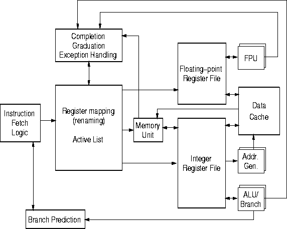

RSIM models a processor microarchitecture that aggressively exploits ILP. It incorporates features from a variety of current commercial processors. The default processor features include:

Figure 3.1: RSIM Processor Microarchitecture.
The processor microarchitecture modeled by RSIM is closest to the MIPS R10000[13] and is illustrated in Figure 3.1. In particular, RSIM models the R10000's active list (which holds the currently active instructions, corresponding to the reorder buffer or instruction window of other processors), register map table (which holds the mapping from logical to physical registers), and shadow mappers (which store register map table information on branch prediction to allow single-cycle state recovery on mispredictions). The pipeline parallels the Fetch, Decode, Issue, Execute, and Complete stages of the dynamically scheduled R10000 pipeline. Instructions are graduated (i.e. retired, committed, or removed from the active list) after passing through this pipeline. Instructions are fetched, decoded, and graduated in program order; however, instructions can issue, execute, and complete out-of-order. In-order graduation allows RSIM to implement precise interrupts.
Most processor parameters are configurable at runtime. These parameters are listed in Chapter 4.